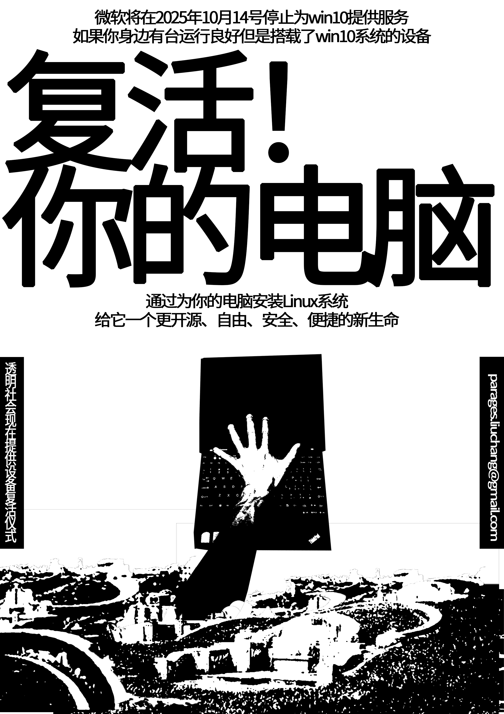

本次工作坊针对Windows 10支持终止和Linux安装服务，鼓励将设备系统更换过程作为公共教育的一部分进行展示。 This workshop, addressing the discontinuation of Windows 10 support and Linux installation services, encourages showcasing the device system replacement process as part of public education.